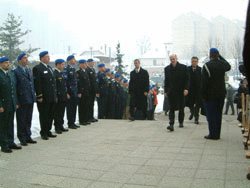
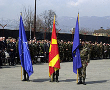
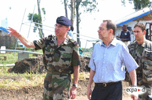

This lesson gives an overview of the peace support operations and police missions carried out by the European Union (EU) within the framework of the European Security and Defence Policy (ESDP). It describes all EU-led peace support operations carried out thus far under ESDP and discusses the main rationale behind the EU's operations.
In this lesson, you will learn about the four peace support operations carried out by the EU thus far within the framework of ESDP. You will familiarize yourself with the main characteristics of each of these operations. You will also learn about the reasons why the EU has carried out these peace support operations.
Since the British-French Summit in St Malo in December 1998, the European Union (EU) has sought to acquire the ability to autonomously carry out crisis management operations. However, this ability remained somewhat theoretical until 2003, when the EU launched four operations within the framework of the European Security and Defence Policy (ESDP), three in Europe and one in Africa. These operations are discussed in this module.
The first mission carried out within the framework of ESDP was the EU Police Mission (EUPM) in Bosnia and Herzegovina (BiH), which was launched in January 2003 on the basis of an invitation from the Bosnian authorities. The operation was not formally authorized by the UN Security Council (although it was welcomed by UN Security Council resolution 1396). The EUPM mandate runs until the end of 2005. The EUPM took over from the UN International Police Task Force (IPTF), which was set up under the Dayton Peace Accord in November 1995.
 The mandate of the EUPM is to "establish sustainable policing arrangements under BiH ownership in accordance with European and international standards". The EUPM is an assistance mission to the Bosnian police forces, and EU police officers have no executive powers. It is composed of some 530 police officers; 24 of the 25 EU member states, along with six non-EU NATO states (Bulgaria, Canada, Iceland, Norway, Romania, and Turkey) and three further non-EU, non-NATO states (Russia, Switzerland, Ukraine) are taking part.
Operation Concordia was the first military operation undertaken by the EU. It was carried out in the Former Yugoslav Republic of Macedonia (FYROM) from March to mid-December 2003. Operation Concordia took over from the NATO Operation Allied Harmony, which was one of NATO's missions aimed at implementing the August 2001 Ohrid Agreement in FYROM. Operation Concordia was launched after a request of the FYROM authorities. There is no UN Security Council resolution formally authorizing Operation Concordia, although UN Security Council resolution 1371 supports the "security presence" in FYROM.
 Operation Concordia was the first EU operation conducted with the use of NATO assets under the Berlin Plus arrangements agreed upon in December 2002. France acted as the "framework nation", meaning that it provided the headquarters for the operation. The mission was composed of some 350 staff from 27 countries, of which 13 were EU member states.
Before continuing, please answer the following questions.
So far, practically all EU operations within the framework of ESDP have been carried out in the EU's immediate neighbourhood (the Balkans). However, there is one exception: Operation Artemis was undertaken in the Democratic Republic of Congo (DRC) in and around the city of Bunia, in the north-east of the DRC. The operation lasted from 15 June to 1 September 2003. Unlike EUPM and Operation Concordia, Operation Artemis was formally based on an UN Security Council Resolution (Res. 1448).
 The mandate of Operation Artemis was to contribute to the stabilization of the security conditions and the improvement of the humanitarian situation in Bunia and to protect the internally displaced persons in the camps in Bunia. Operation Artemis was to be coordinated closely with the UN missions already in Bunia (MONUC). Operation Artemis comprised some 1'800 troops, with France acting as the "framework nation" and providing the bulk of the forces. No NATO assets were involved.
Another recent ESDP operation is Operation Proxima, which was launched in the Former Yugoslav Republic of Macedonia (FYROM) on 15 December 2003 for an initial period of one year. This is a police mission that was carried out by invitation of the FYROM prime minister. Operation Proxima replaced Operation Concordia. The former's mandate is to monitor and advise the Macedonian police, and it is composed of some 200 staff.
After EU leaders agreed in principle at their European Council meeting on 18 June 2004 to take over NATO's SFOR mission in Bosnia and Herzegovina, NATO heads of state and government agreed at their Istanbul summit on 29 June 2004 to conclude NATO's operation in Bosnia and Herzegovina. NATO welcomed the readiness of the EU to deploy a new and distinct UN-mandated Chapter VII mission in the country, based on the Berlin Plus arrangements agreed on by the two organizations. This operation will follow the NATO-led Stabilization Force (SFOR), which was deployed in Bosnia under the 1995 Dayton Peace Agreement. The main mission of SFOR has been to deter hostilities and to stabilize and consolidate peace in BiH. EUFOR, the EU mission's name, will be the EU's largest peace support operation to date (some 7'000 soldiers).
What was the main rationale behind the EU's operations described above? With regard to the three missions in the Balkans, it should be noted that the conflicts in the former Yugoslavia were an important factor leading to the creation of ESDP. The EU had long been involved in various ways in the region, and the conflicts thus made the EU's engagement in the three operations a logical step. Moreover, the EU's presence in both Bosnia and Herzegovina and in FYROM is consistent with the EU's stabilization and association process, which is aimed at assisting southeast European countries in their accession to the EU.
The EU's involvement in the Democratic Republic of Congo, by contrast, cannot be considered part of the objective of bringing stability to the EU's immediate neighbourhood. Given the important role played by France in Operation Artemis, the reasons for the operation are more likely to be found in Paris than in Brussels. Operation Artemis was launched at a time when the EU was undergoing a profound political crisis in the aftermath of the 2003 US-led war in Iraq, which prompted a deep split between EU countries. There was a feeling in many EU member states that the operation was a way of demonstrating renewed cohesion within the EU. Moreover, it was difficult for the EU to decline the UN secretary-general's request to help stabilize the city of Bunia at a time when the EU was presenting itself as the embodiment of multilateralism. Finally, once France had offered to act as the "framework nation" for the operation, other EU member states saw an opportunity for the EU to conduct its first operation outside Europe (under the condition that the operation would be limited in time and scope) that was legitimized by a UN Security Council resolution.
The four operations presented above demonstrate that the EU has the capacity to engage in small crisis management operations. They also show that the EU is able to carry out both military and civilian operations, although the emphasis has thus far clearly been on the civilian side. Moreover, the EU's involvement in the DRC suggests that its sphere of operation potentially extends beyond the European periphery. The question can thus be asked whether the EU is more than just a regional power. However, it is worth noting that so far the EU has deployed only a very limited number of staff in its peace support operations, compared, for instance, to the number of troops that have been involved in NATO missions. Thus, by 2004, a total of less than 3'000 persons had been deployed within the framework of EU peace support operations.
You have completed this learning object.
You have completed this learning object.
Please click on the button to close this window.